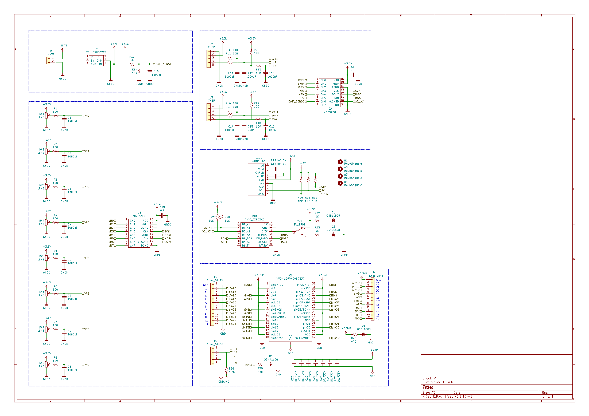
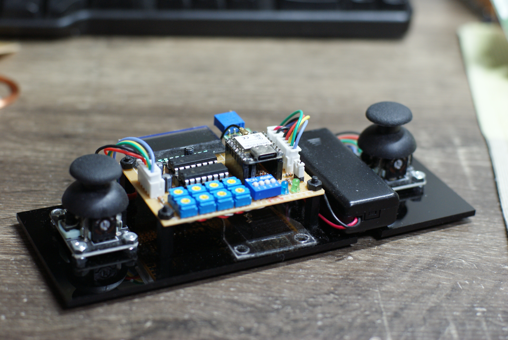

ESP-NOWとは
ESP-NOWは、Espressifが提供する connectionless な無線通信方式です。Wi-Fiルーターへ接続しなくても、ESP32同士で直接データをやり取りできます。簡単に言うとESP32専用の、軽量・近距離・即応型の無線メッセージ通信です。
回路図

クリックすると別タブで開きます。

ESP-NOWを使用した共通リモコンです。
ESP-NOWは、Espressifが提供する connectionless な無線通信方式です。Wi-Fiルーターへ接続しなくても、ESP32同士で直接データをやり取りできます。簡単に言うとESP32専用の、軽量・近距離・即応型の無線メッセージ通信です。

クリックすると別タブで開きます。
Copyright(c) 2016 ホームページサンプル株式会社 All Rights Reserved. Design by http://f-tpl.com